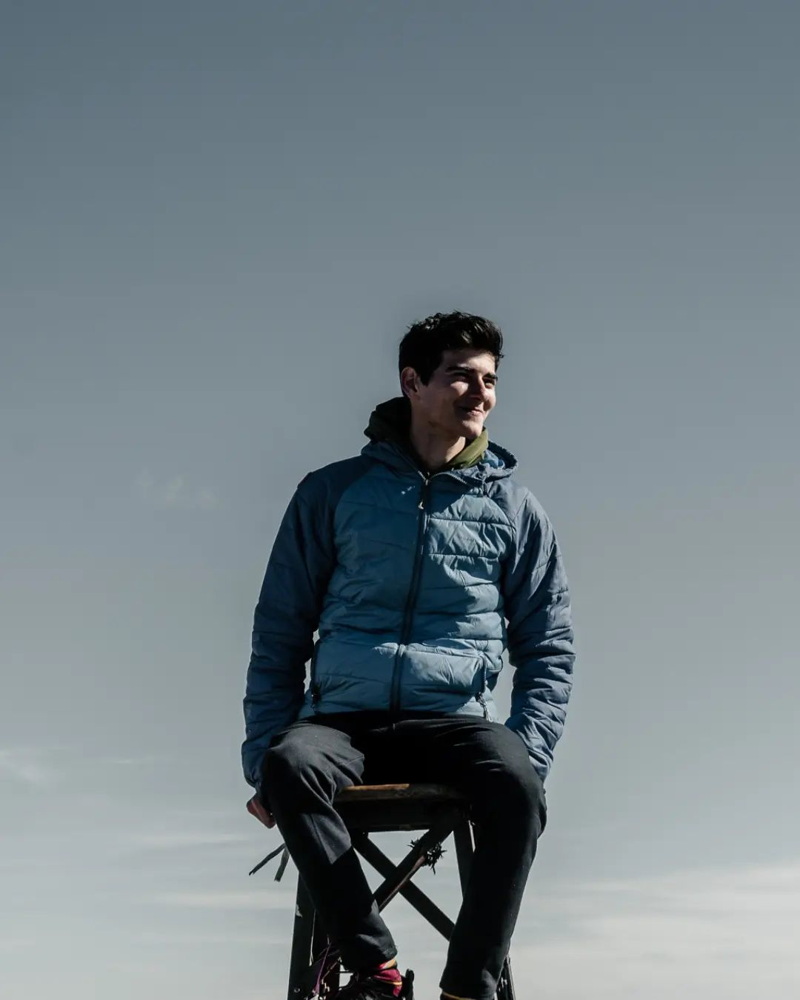

Un poco sobre mi:
Soy Juan Mateo Bigoritto, tengo 21 años y vivo en Santa Fe, Argentina
De chico que me gustan las computadoras y la tecnología, siempre fui muy curioso. A los 9 años empecé a estudiar música hasta los 19 que me recibí de profe.
Estudie dos años de Ingeniería en Informática en la Universidad Nacional del Litoral, y este año decidí empezar el Bootcamp de MindHub para poder empezar a trabajar lo más pronto posible.
Tecnologías que conozco:
- C++
- HTML
- CSS
- JavaScript
- Bootstrap
- SASS
- ReactJS
- GIT
Mis Hobbies:
Algunos de mis hobbies son la fotografía, leer, mirar series, la tecnología, los gatos y jugar videojuegos